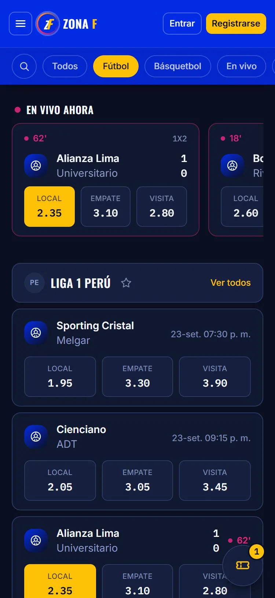

/trabajos/hb-construcciones
Una web para que pedir presupuesto sea tan fácil como mandar un WhatsApp
Online · HB Construcciones · 2026
- Cliente
- HB Construcciones · Reformas integrales y piscinas
- Ubicación
- Villanueva de la Cañada (Madrid)
- Servicios
- Diseño y desarrollo web · Propuesta de identidad
- Mi papel
- Dirección del proyecto, especificación, diseño, revisión y despliegue. Implementación asistida por IA (Claude Code).
01
El reto
HB Construcciones hace reformas integrales, piscinas, cocinas, baños y ampliaciones en la zona oeste de Madrid. No tenía web: todos sus clientes llegaban por contactos y recomendaciones. Necesitaban salir del boca a boca con una web que transmitiera confianza y que convirtiera esa confianza en una conversación.
02
La solución
- WhatsApp como canal principalTodos los botones llevan a WhatsApp y el formulario abre la conversación con el mensaje ya preparado.
- Barra fija en el móvil"Llamar" y "WhatsApp", siempre a un toque.
- Respuestas antes de que preguntenLicencias de obra, plazos, presupuesto y garantía.
- Pruebas realesGalería de obras, vídeos de obra y reseñas de sus clientes.
- Pensada para buscar en localContenido orientado a búsquedas de reformas y piscinas en su zona.

03
Propuesta de identidad
Un kit de logo completo en vectorial. El cliente prefirió mantener su logo original, así que la web usa su identidad actual.
04
Resultado
HB pasa de depender solo del boca a boca a tener una web propia, online desde octubre de 2026. Este caso se actualizará con resultados reales en cuanto haya datos.
05Para desarrolladores
- Next.js (App Router) · React 19 · TypeScript
- Tailwind CSS 4 · Framer Motion · Lucide · Geist
- Pipeline de medios a WebP con sharp
- JSON-LD de LocalBusiness
- Vercel · Vercel Analytics · ESLint
- Desarrollo guiado por especificación

Siguiente proyecto · 02 / 03 Zona F Ver caso →